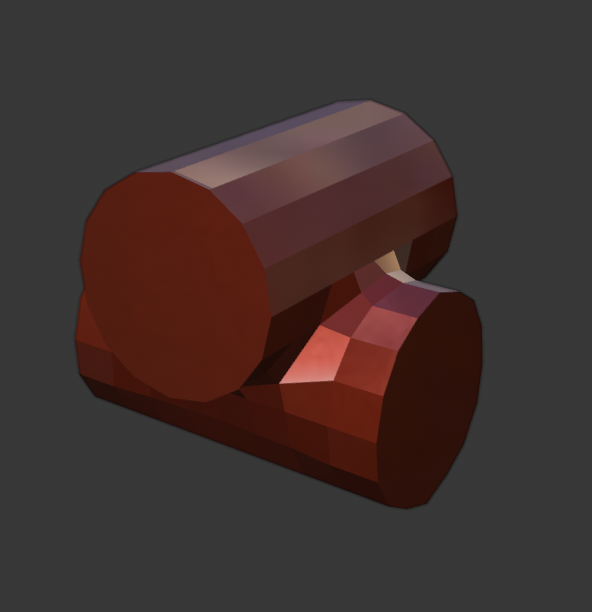
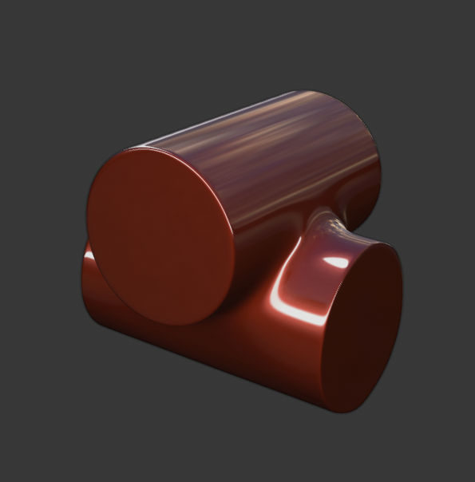
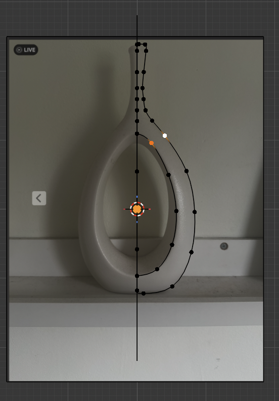
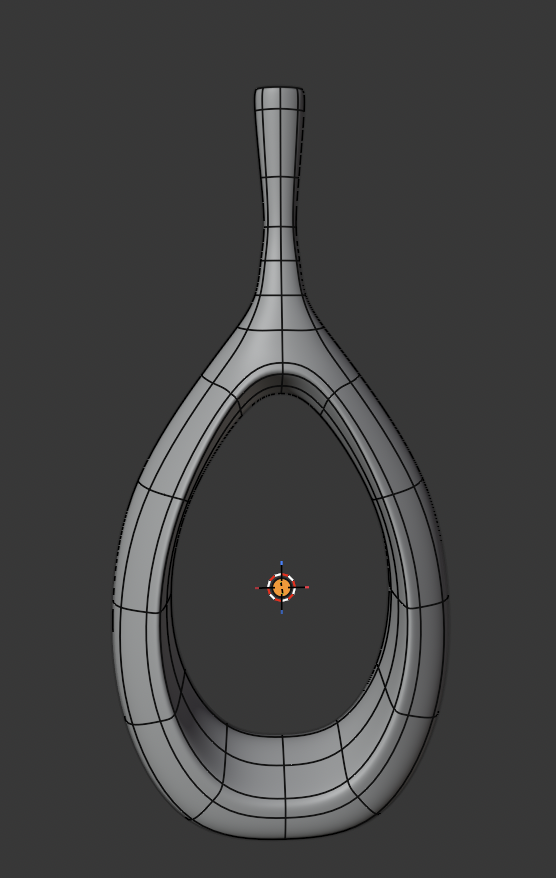
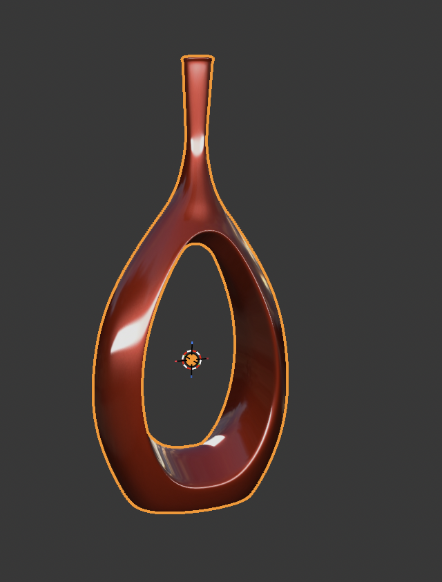

Subdivision surface modeling is a technique that takes a preexisting mesh in 3D software and creates a new model with smooth and predictable curvature (figure 5 and figure 6). Simply put, to create detailed models in 3D CGI, this technique is required since all basic mesh models except spheres have incredibly low detail.


The vase has seamless curves and sharp edges, making subdivision modeling the ideal technique. To create it I first developed a contour cage (figure 7), which represented its silhouette. Then, I created faces between the vertices of the contour cage, integrated Blender's subvision tool, made adjustments to its curvature, and added faces to the holes present (figure 8).


Finally, I used a special material to check for surface imperfections on the model and made slight adjustments until I felt confident about its geometry and shading (figure 9).

The modeling stage was complete, preparing me for the next step: